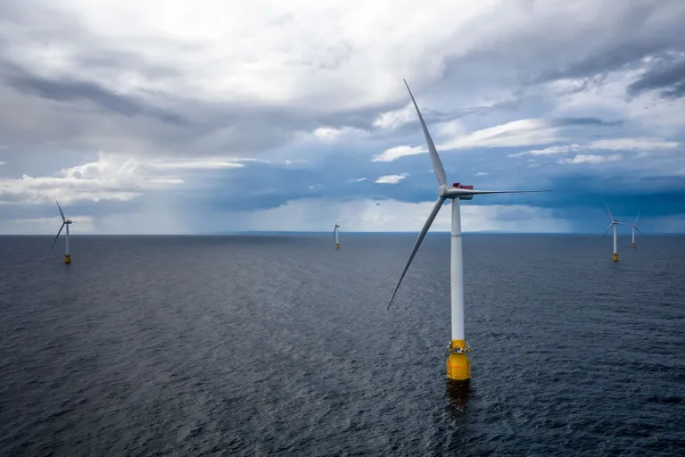

Veja o primeiro parque eólico flutuante do mundo
Ao criar turbinas eólicas que flutuam, engenheiros podem entrar mar adentro para gerar energia.
A Escócia é conhecida por suas terras altas e pitorescas e pelos highlanders com seus tartãs, aquele típico padrão xadrez. Agora, porém, o país possui o primeiro parque eólico flutuante do mundo. As grandes turbinas estão boiando no Mar do Norte, a 24 quilômetros da costa de Petershead. O parque consiste em cinco grandes turbinas eólicas com cerca de 250 metros de altura (78 metros ficam embaixo d’água). Apelidado de projeto Hywind, os defensores das energias renováveis esperam que ele possa servir de modelo para outras regiões capazes de implementar a mesma tecnologia.
Então, como funciona?
As enormes turbinas foram montadas na Noruega pela empresa de petróleo Statoil e transferidas por balsa até a Escócia. Para criar as gigantescas estruturas, a Statoil fez parceria com a Masdar, uma empresa dos Emirados Árabes. Três grandes âncoras de sucção com 16 metros de altura e 5 de diâmetro mantém a turbina no fundo do mar. As 111 toneladas de cada âncora garantem que as turbinas estejam em posição vertical. escocia-parque-eolico-flutuante As cinco turbinas eólicas são capazes de adicionar 30 megawatts de energia à rede elétrica. FOTO DE ØYVIND GRAVÅS, WOLDCAM, STATOIL Turbinas eólicas têm sido construídas na água desde a década de 1990, mas sempre presas ao solo e em profundidades de até 60 metros. Já as turbinas flutuantes na Escócia estão ancoradas a 78 metros, e podem ser fixadas em profundidades de mais de 790 metros. Uma vez vertical e operacional, os cabos conectam as turbinas à rede de energia da cidade. Segundo a Statoil, as turbinas são capazes de alimentar 20 mil casas. "O parque flutua, mas é bastante estável quando se levanta", disse Elin Isaksen, uma representante da Statoil. Ela explicou que o conceito de turbina flutuante foi criado por engenheiros de energia em 2001. Um único protótipo foi criado em 2009 e, em 2015, o governo escocês começou a financiar a Statoil para trabalhar nas cinco turbinas eólicas que agora estão no Mar do Norte. Cada turbina é capaz de bombear 6 megawatts de energia na rede – no total, a usina pode gerar 30 megawatts. Quando não está em uso, a energia é armazenada em baterias de lítio com capacidade equivalente a dois milhões de iPhones.
O FUTURO DA ENERGIA EÓLICA
Ao contrário das turbinas eólicas instaladas em terra, as turbinas flutuantes não precisam ser adaptadas ao terreno em que se encontram. Isso significa que podem ser produzidas em massa com custo reduzido. Mas a produção ainda é cara. A instalação das cinco turbinas na Escócia custou 200 milhões de libras esterlinas, cerca de 860 milhões de reais. Para conseguir o montante, Statoil dependeu de subsídios do governo escocês. "A Escócia tem um regime de apoio que possibilitou [o parque]", disse Isaksen. O Reino Unido tem uma Diretiva de Energia Renovável que determina que 30% da eletricidade do país deve vir de fontes renováveis até 2020. De acordo com um relatório do governo escocês, mais da metade da energia da região já vem de fontes renováveis. Elin Isaksen tem o cuidado de dizer que as cinco turbinas da Escócia são um projeto piloto – a empresa espera aprender para melhorar a eficiência. Segundo ela, turbinas ainda maiores, capazes de gerar até 12 megawatts, estão sendo projetadas. A maior turbina eólica no mundo só consegue gerar 9,5 megawatts de energia. No entanto, tamanho e eficiência têm aumentado rapidamente nos últimos anos.

A energia solar é obtida por meio de placas solares, que captam a energia luminosa e a transformam em energia térmica ou elétrica. Os painéis solares captam a luz do sol e geram energia que é transportada até o inversor solar.
Energia sustentável é a energia produzida a partir de fontes renováveis, isto é, que não se esgotam como os combustíveis fósseis, por exemplo.

A energia do mar é a energia maremotriz, que é gerada pelo movimento das marés. As marés são causadas pela força gravitacional da Lua e do Sol. A energia maremotriz é renovável e limpa

A energia hidrelétrica é aquela que é gerada ao transformar a força da água em energia elétrica. Para aproveitar tal força, são construídas grandes infraestruturas hidráulicas